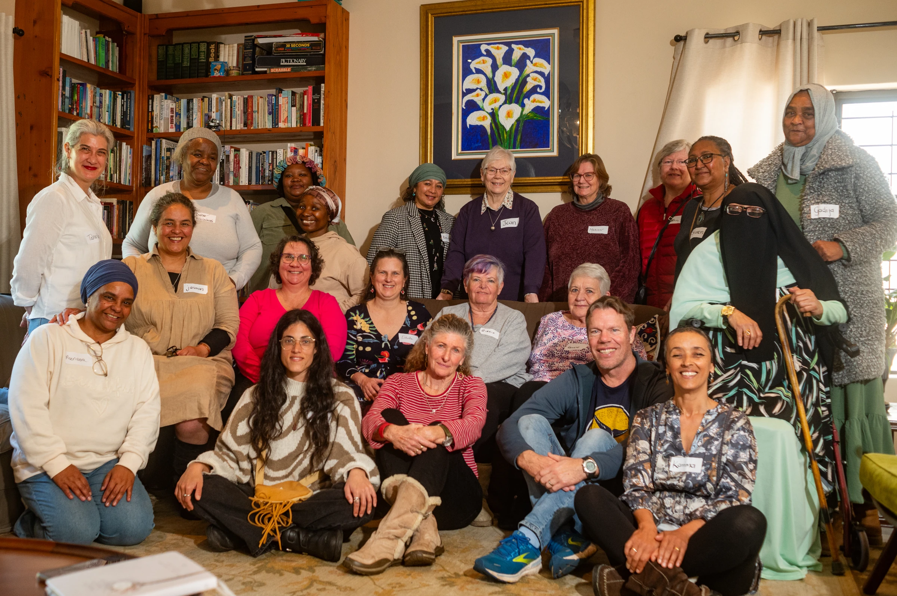

The JAS Foundation started informally when Karrima Nortje began doing Bowen therapy on family and friends. Over a few years (2018 to 2024), this grew into a pop-up clinic in Kewtown, Athlone — located in Shahieda Bower's living room, with neighbours from the surrounding communities coming for a Bowen treatment. The news spread by word-of-mouth, and soon the sheer volume of clients coming through Shahieda's living room was simply overwhelming. The situation required a more durable solution: to train local practitioners. [link — 'Building Bridges' article]
About Us
Started in a living room in Kewtown. Still run the same way.
JAS Foundation exists because one community member opened her home in 2019 and asked a simple question: what if the people who needed this care most were also the ones trained to give it?
Our story
JAS Foundation began in 2019 as a pro-bono Bowen therapy clinic run from a community member's home in Kewtown, Cape Town. Word spread the way this kind of care always does — through neighbours who felt the difference and told the next person.
In 2024, that grew into a second site: a co-pay partnership with the Braitex factory in Atlantis, where day and night shift workers alike can now access treatment. Today we're building the next stage — training the practitioners who will carry this work far beyond the two communities where it started.
 Athlone - Clients waiting on the stoep of a home clinic in Bridgetown
Athlone - Clients waiting on the stoep of a home clinic in Bridgetown
How it grew
From a living room in Kewtown to a foundation training practitioners across the Cape Flats.
In August 2024, the JAS Foundation was launched by its three founders — Karrima Nortje, Jasmin Nordien, and Tahirih Michot — in honour of their mothers: Jean Nortje, Amina Nordien, and Shelly (Rochelle) Cook. [link — posters of the mothers] The mission: to make healing modalities accessible to marginalised communities, by building a network of health-care practitioners over the next decade. [link — the launch, YouTube clip]
2024. JAS Foundation entered into a partnership with the Braitex factory in Atlantis, and operated on a co-pay model, where both the factory and its employees financially contribute to treatment costs. The partnership was experimental, and sought to make Bowen treatment accessible and affordable to workers.
2025. The Foundation piloted the 'Hands of Change' training programme, starting with eight trainees attending a Bowen Practitioner's course in January 2025. Six trainees successfully completed the course in November 2025. In addition, a pro bono Teaching Clinic was established in Athlone, offering Bowen therapy to the surrounding community one Saturday a month — and the trainees set up several Community Clinics in their own neighbourhoods.
2026. There were changes in the leadership team: Tahirih Michot left, and Constance (Connie) Formson and Sharron Marco-Thyse joined the board. The training programme also expanded to include the Bowen Advanced course, starting with three practitioners.

Top - Tahirah Surname, Name Surname, Name Surname, Name Surname, Name Surname, Name Surname, Name Surname, Name Surname, Name Surname, Name Surname Middle - Jasmin Nordien, Name Surname, Name Surname, Name Surname, Name Surname, Name Surname, Name Surname, Name Surname, Name Surname, Name Surname Bottom - Mooneera Surname, Name Surname, Name Surname, Name Surname, Name Surname, Name Surname, Name Surname, Name Surname, Name Surname, Name SurnameWhat we believe
- Care should be local. The best person to treat a community is often someone from that community.
- The body can be trusted. Our training exists to support the nervous system's own capacity to heal — not to override it.
- Training is the multiplier. One pair of trained hands can treat thousands of people over a career. That's where we put our effort.
- Dignity, not charity. Our co-pay model at Braitex and our pro-bono clinic in Kewtown are both designed around what each community can sustain.
Who runs it
We're a small team — with a big impact.
Jasmin Nordien
Board MemberConnie Formson
Board MemberKarrima Nortje
Board MemberSharron Thyse
Board MemberJean Nortje
PresidentWho we work alongside
Want to help this reach the next town?
Every practitioner we train is someone who can treat a community for decades.